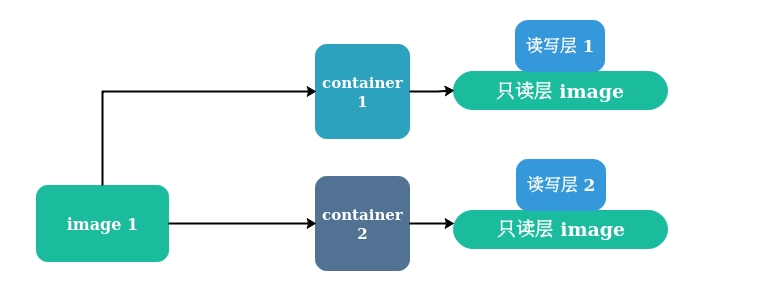

Docker 基础学习笔记
参考 && 扩展
目录
- Docker 常用命令
- Docker 基础架构
- Docker 原理简述
- Dockerfile - 构建自定义镜像
- Docker 多阶段构建
- Docker Compose - 编排操控容器
- Docker Machine - 创建管理容器宿主机
- Docker Swarm
- Docker 可视化管理 - Portainer
Docker 常用命令 [Top]
命令手册查看
docker|man dockerman docker <command>|docker <command> -hdocker-machinedocker-machine <command> --help
docker
docker [options] COMMANDdocker version- 显示 docker 版本信息docker search 关键字- 默认从 docker hub 搜索指定镜像docker pull 镜像名:tag- 拉取镜像docker images- 列出已安装的镜像docker rmi [i-id]- 删除指定镜像docker rm [c-id]- 删除指定容器docker ps- 查看运行中的容器-a查看所有容器docker start|stop|restart [c-id]|[c-name]- 通过容器 id 或容器名运行 / 关闭容器docker run- 在隔离容器中运行命令docker run --name [c-name] -d -p 3306:3306 mysql- docker 启动容器--name- 自定义容器名-p- 端口映射，-p 宿主机端口:容器端口-d- 守护进程
docker run volume- 数据卷、数据卷容器docker run -v|--volume[=[[HOST-DIR:]CONTAINER-DIR[:OPTIONS]]] ...- 添加一个数据卷docker rm -v- 删除容器和容器绑定的数据卷docker run --rm- 在关闭容器后也会自动删除容器和容器绑定的数据卷docker run -it -v /dbdata --name dbdata ubuntu- 创建一个数据卷容器 dbdata ，并在其中创建一个数据卷挂载到 /dbdatadocker run -it --volumes-from dbdata --name db1 ubuntu- 创建 db1 容器，并从 dbdata 容器挂载数据卷docker logs container-name/[c-id]- 查看容器日志Ctrl+P+Q- 退出容器交互式界面，但不关闭容器docker attach- 将本地输入、输出、错误流附加到正在运行的容器docker commit—从当前更改的容器状态创建新镜像docker exec—在活动或正在运行的容器中运行命令docker exec -it container command
docker history [i-id]- 显示镜像历史记录docker info- 显示系统范围信息docker inspect [img|con]- 查找 docker 指定容器和镜像的系统级信息docker login --username=xxx --email=xxx- 登录到本地注册表或 Docker Hubdocker pull- 从本地注册表或 Docker Hub 中提取镜像或存储库docker inspect --format="{\{ \.Volumes }}" [container]- 查看宿主机上对应容器数据卷位置
docker network - 管理网络
docker network lsdocker network connectdocker network create- docker network disconnect
- docker network inspect
- docker network prune
- docker network rm
Docker 基础架构 [Top]
常说的 Docker 又称为 Docker Engine
C/S 架构 - 客户端、服务器两大组件
- 客户端可以通过 socket 或 RESTful API 与服务器进行通信
Docker Engine=Docker 守护进程+REST API （指定与守护进程交互的接口）+命令行接口（CLI）（与守护进程通信，通过封装 REST API）

服务端
四大组件
1、dockerd
$ ps -ef | grep dockerd
root 3769 1 0 Dec02 ? 00:01:08 /usr/bin/dockerd -H fd:// --containerd=/run/containerd/containerd.sock
2、docker-proxy
dockerd 子进程，当容器启动并使用端口映射时才会执行，负责配置容器的端口映射规则
$ ps aux | grep docker-proxy
root 24923 0.0 0.0 700716 4656 ? Sl 13:19 0:00 /usr/bin/docker-proxy -proto tcp -host-ip 0.0.0.0 -host-port 8011 -container-ip 172.17.0.2 -container-port 80
root 24937 0.0 0.0 626728 3824 ? Sl 13:19 0:00 /usr/bin/docker-proxy -proto tcp -host-ip 0.0.0.0 -host-port 2222 -container-ip 172.17.0.2 -container-port 2222
3、containerd
dockerd 子进程
4、containerd-shim
containerd 子进程
客户端
Docker 原理简述 [Top]
命名空间 - namespace
- 操作系统中，进程间共享的资源有内核、文件系统、网络、进程号 ( Process ID, PID )、用户号 ( User ID，UID )、进程间通信 ( InterProcess Communication，IPC )等。Linux 命名空间就是为了实现以上的相互隔离，保证了容器之间彼此互补影响
1、进程命名空间
2、IPC 命名空间
- IPC - Interprocess Communication - 进程间交互
- 容器中的进程交互还是采用 Linux 常见 IPC，包括信号量、消息队列、共享内存等方式
3、网络命名空间
4、挂载命名空间
5、UTS 命名空间
- UTS - UNIX Time-sharing System
6、用户命名空间
控制组 - Control Groups - CGroups
- Linux 内核特性，主要用来对共享资源进行隔离、限制、审计等
- 限制资源配额，比如某个容器只能使用 100M 内存
联合文件系统 - Union File System - UnionFS
[参考]
- UnionFS 是一种分层、轻量级并且高性能的文件系统，可以把不同物理位置的目录合并 mount 到同一个目录中
- UnionFS 的一个最主要的应用是，把一张 CD/DVD 和一个硬盘目录给联合 mount 在一起，然后，你就可以对这个只读的 CD/DVD 上的文件进行修改
- Docker 的镜像与容器就是分层存储，可用的存储引擎有 aufs、overlay 等，在
/var/lib/docker下查看若有 aufs 目录，则使用的是 aufs 文件系统，若是 overlay 则是 overlay 文件系统分层镜像 - 只读层 - Read Layer - 镜像层
- 读写层 - Read Write Layer - 容器层

容器就是由存储 image 的只读层和读写层构成
容器需要修改只读层的文件，会先从只读层拷贝一份到读写层，再修改它，实际上修改的是副本。但修改后，只读层对应的文件就“隐藏” 起来了
容器的只读层 ( 镜像 ) 是共享的，也就是当同一镜像创建的多个容器时，其实只是创建了多个读写层，删除容器时，就只是删除容器的读写层。而且读写层也是在容器操作产生数据时才消耗资源，所以创建容器的成本很小！

镜像作为只读层是共享的，而容器在镜像之上附加了一层可写层
- docker engine 是共享宿主机操作系统的，容器又是共享 image 的（只读层共享），所以容器启动成本很小！
Dockerfile - 构建自定义镜像 [Top]
- Dockerfile 一般分为：基础镜像、镜像元信息、镜像操作指令和容器启动时执行指令
- Dockerfile 行注释：
# - Dockerfile 换行符：
\ - Dockerfile 的指令是顺序执行的
| 指令 | 说明 | ||
|---|---|---|---|
| FROM [image]:[tag] | 基础镜像，省略 tag 则是 latest | ||
| LABLE [k1]=[v1] [k2]=[v2]... | 为镜像添加元数据,多用于声明构建信息，作者、机构、组织等 | ||
| ENV [k] [v] or ENV [k]=[v] | 环境变量，${k} 引用变量 | ||
| ARG [name]=[value] | 构建运行时的变量 | ||
| WORKDIR [path] | 工作目录，其他指令都会在这个目录执行 | ||
| ADD [src] [dest] | 本地文件添加到镜像中 | ||
| COPY [src] [dest] | 同上，但不会自动解压tar和访问网络资源 | ||
| RUN [command] | 构建镜像时执行的命令，shell模式 | ||
RUN ["<command>", "<arg1>", "<arg2>"] |
RUN exec执行格式，命令行模式 | ||
CMD ["<command>", "<arg1>", "<arg2>"] |
容器启动时才执行的命令 | ||
| ENTRYPOINT | 可以覆盖 CMD ，下面有详解 | ||
| EXPOSE [port1] [port2]... | 声明镜像内服务监听端口 | ||
VOLUME ["<src1>","<src2>"...] |
创建镜像内数据卷挂载点 | ||
| USER [UID]\ | [Username]\ | [GID] | 指定运行指令的用户 |
| ONBUILD [INSTRUCTION] | 当所构建的镜像被用做其他镜像的基础镜像时被触发 |
- RUN 指令创建的中间镜像会被缓存，并会在下次构建中使用，如果不想使用缓存镜像，可在构建时指定
--no-cache参数- EXPOSE 只是声明作用，并不会自动完成端口映射，启动容器时候还是需要添加
-P或-p- VOLUME 和 EXPOSE 类似，不会自动挂载数据卷，需要启动容器时使用
-v
ADD 和 COPY
CMD 、 ENTRYPOINT 和 docker run ... [command]
docker run ... [command]是指执行docker run时跟在最后面的容器启动命令
CMD、ENTRYPOINT和docker run ... [command]都可以设定容器启动时执行的命令ENTRYPOINT>docker run ... [command]>CMD- 当存在
ENTRYPOINT时，ENTRYPOINT会将docker run ... [command]和CMD中指定的参数传入 - 当不存在
ENTRYPOINT，但存在docker run ... [command]，会覆盖CMD - 当既不存在
ENTRYPOINT也不存在docker run ... [command]，则默认执行CMD
- 当存在
通常在 Dockerfile 中使用
ENTRYPOINT指定容器启动时的命令同时用CMD指定默认命令参数，这样在docker run时既可以添加参数，也可以不添加使用CMD的默认参数- 一个 Dockerfile 最多只能有一个
CMD和ENTRYPOINT，如果有多个，只有最后一个生效
CMD 的三种用法：
CMD ["executable","param1","param2"](exec form, this is the preferred form，命令行模式 )CMD ["param1","param2"](as default parameters to ENTRYPOINT)CMD command param1 param2(shell form，shell 模式 )
ENTRYPOINT 的两种用法：
ENTRYPOINT ["executable", "param1", "param2"](exec form, preferred)ENTRYPOINT command param1 param2(shell form)
Docker Compose - 编排操控容器 [Top]
安装
# Linux
$ sudo curl -L https://github.com/docker/compose/releases/download/1.18.0/docker-compose-`uname -s`-`uname -m` -o /usr/local/bin/docker-compose
$ sudo chmod +x /usr/local/bin/docker-compose
$ docker-compose --version
常用命令
docker-compose [-f <arg>...] [options] [COMMAND] [ARGS...]docker-composedocker-compose <command> -h
1、编写需要重复生成应用 ( app ) 的 Dockerfile
一般一个容器里一个应用，比如 mysql 数据库
2、定义用于编排多个应用以组成服务 ( service ) 的 docker-compose.yml
一个服务一般由多个应用组成，比如 web service 可以由 nignx 负载均衡器、tomcat web 服务器、mysql 数据库服务器等组成
3、docker-compose up
- docker-compose 本身没有构建镜像的功能，如果容器镜像是直接从 docker registry 拉取，则不需要 Dockerfile ；但如果需要基于基础镜像构建新的镜像，则需要使用 Dockerfile
Docker Machine - 创建管理容器宿主机 [Top]
简介
- docker-machine 可以在本地、云端服务器快速创建包含 Docker Engine 的虚拟机，但不能在虚拟机中创建（虚拟机中不能再创建虚拟机）
- docker-machine 可以启动、审查、停止和重新启动托管的宿主机、升级 Docker 客户端和守护程序、并配置 Docker 客户端与你的宿主机通信
- 也可以使用 Ansible 等 DevOps 工具实现对 Docker 环境的自动化管理
- 本质上 docker-machine 是一个虚拟机管理工具，它通过创建一个安装好docker 的虚拟机（支持 VirtualBox，DigitalOcean，EC2 等），并设置对应的环境变量（ DOCKER_HOST，DOCKER_MACHINE_NAME 等），使得本地的 docker 工具获得透明远程操作虚拟机的能力。从而使本身不支持 docker 的 Windows 和 Mac 系统能够直接使用 docker 命令
常用命令
docker-machine- 查看常用命令docker-machine <command> --help- 查看常用命令帮助
安装
$ curl -L https://github.com/docker/machine/releases/download/v0.16.2/docker-machine-`uname -s`-`uname -m` >/usr/local/bin/docker-machine
$ chmod +x /usr/local/bin/docker-machine
常用命令
docker-machine [OPTIONS] COMMAND [arg...]docker-machine- 查看常用命令docker-machine COMMAND -h- 查看具体某一个命令功能
解决首次运行慢
第一次运行
docker-machine create会去 https://github.com/boot2docker/boot2docker/releases/ 下载一个最新的 57M 的 boot2docker.iso 镜像，国内下载会很慢
# 1. 下载 boot2docker.iso 最新版本到本地 - https://github.com/boot2docker/boot2docker/releases/
# 2. 移动 boot2docker.iso 到 ~/.docker/machine/cache/
$ mv boot2docker.iso ~/.docker/machine/cache/
# 3. 指定本地的 boot2docker.iso 路径，并跳过网络检查创建新的 docker machine ，命名为 default
$ docker-machine create default -d virutalbox --virtualbox-boot2docker-url=/home/`whoami`/.docker/machine/cache/boot2docker.iso
# --virtualbox-boot2docker-url 手动指定了boot2docker.iso 位置
配置当前shell docker server
$ docker-machine env default
export DOCKER_TLS_VERIFY="1"
export DOCKER_HOST="tcp://192.168.99.100:2376"
export DOCKER_CERT_PATH="/home/xcq/.docker/machine/machines/default"
export DOCKER_MACHINE_NAME="default"
# Run this command to configure your shell:
# eval $(docker-machine env default)
$ eval $(docker-machine env default)
# 执行上面命令即可切换 docker server 为 default 主机中 docker server